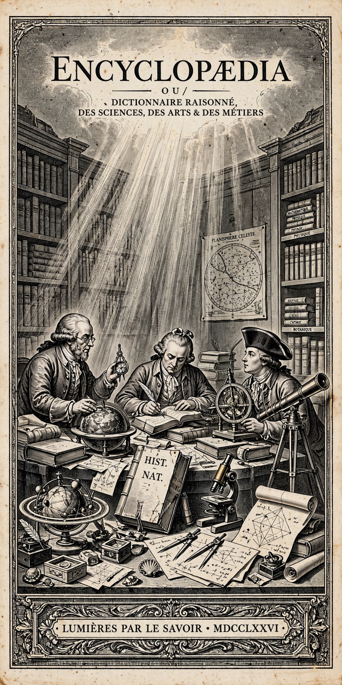

Age of Enlightenment

| Period | Late 17th to early 19th century |
|---|---|
| Regions | Europe and the Americas |
| Key figures | Locke, Voltaire, Rousseau, Montesquieu, Kant, Hume, Smith, Diderot |
| Core ideas | Reason, empiricism, liberty, progress, toleration, constitutional government |
| Landmark work | Encyclopédie (1751–1772) |
The Age of Enlightenment (also the Age of Reason) was an intellectual and philosophical movement that dominated Europe in the 17th and 18th centuries, emphasising reason, individualism, science and scepticism of traditional authority. Building on the Scientific Revolution, Enlightenment thinkers sought to reform society through rational inquiry, and their ideas underpinned the American and French Revolutions.
Ideas
Central themes included the social contract and natural rights (John Locke, Jean-Jacques Rousseau), the separation of powers (Montesquieu's The Spirit of Law, 1748), religious toleration (Voltaire), free markets (Adam Smith's The Wealth of Nations, 1776), and the categorical imperative and public use of reason explored by Immanuel Kant, who answered the question "What is Enlightenment?" with the motto Sapere aude — "Dare to know." David Hume and other empiricists developed sceptical, evidence-based accounts of knowledge and morality.
Spread
The movement spread through salons, coffeehouses, academies, Masonic lodges and the Republic of Letters. Denis Diderot and Jean le Rond d'Alembert's Encyclopédie summarised and disseminated the new knowledge. Distinct national variants included the French Lumières, the German Aufklärung, and the Scottish Enlightenment centred in Edinburgh.
Legacy
Enlightenment thought shaped modern liberal democracy, secular education, human rights and the scientific method, while also drawing later criticism for overconfidence in reason and for coexisting with colonialism and exclusion.